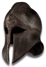

Set
Sazabi's Grand Tribute
3 items, level 73

Sazabi's Cobalt Redeemer
Cryptic Sword
Damage: 5-77
Required Level: 73
+150-250% Enhanced Weapon Damage
Adds 40-80 Damage
+40% Increased Attack Speed
+250-350% Damage to Demons
+1 to Redemption
(2 items) +25% Deadly Strike
(3 items) +25% Chance of Open Wounds

Sazabi's Ghost Liberator
Balrog Skin
Defense: 410-517
Required Level: 67
+400-600 Defense
+30% Faster Hit Recovery
+200 to Attack Rating
+100-200% Damage to Undead
+10-15% Physical Damage Reduction
(2 items) +100% Damage to Undead
(3 items) +10% to Strength

Sazabi's Mental Sheath
Basinet
Defense: 75-84
Required Level: 43
+100-150 Defense
+1 to All Skills
+15-20% Fire Resistance
+15-20% Lightning Resistance
(2 items) +1 to All Skills
(3 items) +1 to All Skills
Set bonuses
- 2 items: +40% Faster Run/Walk Speed, Poison Length Reduced by 75%
Full set
- +30% to All Resistances
- +15% Life stolen per hit
- +30% Increased Maximum Life
- +1 to All Skills
- +15% Physical Damage Reduction
- +100% Extra Gold from Monsters